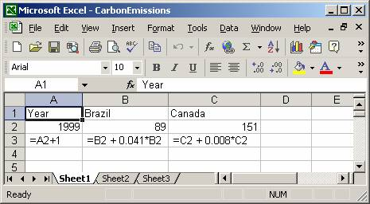

- Create an XY graph showing spending in constant 2002 dollars for the period 1960-2002.

- In a well written paragraph describe the graph you made in c.
ISP 120 Final Review
1. The following table list the 1998 average daily circulation of ten newspapers with the largest daily circulation in the US.
| Newspaper | 1998 Circulation |
| Wall Street Journal | 1,740,450 |
| USA Today | 1,653,428 |
| Los Angeles Times | 1,067,540 |
| New York Times | 1,066,658 |
| Washington Post | 759, 122 |
| New York Daily News | 723, 143 |
| Chicago Tribune | 673,508 |
| Newsday (Long Island, NY) | 572,444 |
| Houston Chronicle | 550,763 |
| Chicago Sun-Times | 485,666 |
a. How many times is the circulation of the Wall Street Journal greater than the circulation of the Chicago Tribune?
Answer. The circulation of the Wall Street Journal is 2.58 times larger than the circulation of the Chicago Tribune. The calculation is 1,740,450/673,508 � 2.58.
b. By how many percent is the circulation of the Chicago Tribune larger than the circulation of the Chicago Sun-Times?
Answer. The circulation of the Chicago Tribune is 38% larger than the circulation of the Chicago Sun-Times. The calculation is (673,508 - 485,666)/485,666 � 0.38 = 38%.
c. The newspaper that had the larger circulation in the world was Yomiuri Shimbun in Japan. Its 1998 circulation was 14,532,694. By how many percent is its circulation larger than the circulation of the Wall Street Journal?
Answer. Yomiuri Shimbun has a circulation 735% larger than the Wall Street Journal. The calculation is (14,532,694 - 1,740,450)/1,740,450 � 7.35 = 735%.
d. The circulation of the Chicago Tribune in 1988 was 774,045. By how many percent did the circulation drop from 1988 to 1998?
Answer. The circulation of the Chicago Tribune dropped 13 %. The calculation is (774045 -673508)/774045 � 0.13 = 13%.
2. In the period January 2000 to March 2000, stock for Sapient Corporation, a consulting company that helps businesses put their operations on the internet, dropped 51% and then rose by 49%. By how many percent did price change over the whole period?
Answer. Starting at 100%, the stock dropped to 49% of its original value. It then increase by 49% of the 49%, i.e., 0.49*0.49 = 0.2401 or 24.01% of the original price. Thus in the end it was 49% + 24.01% or 73.01% of its original value. It was down 26.99%.
3. Cigarette in the US has decreased over the last 20 years, even though the rate is still relatively high. In 1998, 277 of every 1000 individuals in the US over the age of 12 reported that they were smoking, a 28% decrease since 1985. What was the rate in 1985?
Answer. This is an example of a "reverse percentage change" problem. I usually solve them by setting up the equation
x - (0.28*x) = 277
x*(1 - 0.28) = 277
x(0.72) = 277
x = 277/0.72 � 385
The answer is approximately 385 of every 1000 individuals over the age of 12.
4. Estimate the number of varsity college basketball players (men and women) in the US.
An answer. There are approximately 3000 undergraduate colleges and universities in the US. (One can get this by estimating that there are about 60 colleges per state, but it is a difficult number to justify. For example, why not 50 colleges or 30 colleges per state?) Most schools have both a men and women's team (especially after Title IX, which required universities receiving federal funds to have gender equality in sports programs.) Each team has approximately 15 players. Thus there would be about 2000*2*15=60,000 varsity college basketball players in the US.
5. Carefully describe a) what the CPI is, b) how it is constructed, and c) what the meaning of actual index numbers is (e.g., the CPI in 1999 was 166.6; what does 166.6 mean?)
Answer. I highly recommend you read the CPI Tutorial. The CPI is number used to measure the changing value of money over time. It is published by the US Bureau of Labor Statistics. Economists select an imaginary "market basket" of goods and services that represents the buying patterns of most people. Every month they collect price data on the items in the basket and essentially compute the value of the entire basket. The CPI is literally the ratio of the price of the basket in a given year to the price of the basket in a chosen base period multiplied by 100. For example, the 166.6 CPI in 1999 means that the price of the standard market basket is 1.666 times as much as it was in the base period (1982-84). It means that in 1999 the same goods and services cost about 66.6% more than they did in 1982-84. Another interpretation of the index number 166.6 is the following: a person would have to pay $166.60 to buy the same goods and services that a person could buy for $100.00 in the base period on average.
6. Open the Defense.xls file. this file contains the data on U.S. spending for national defense for fiscal years between 1960 and 2002.
You need to paste in the CPI values in column C. The needed Excel formula in column D is =B5*179.9/C5 or =B5*$C$47/C5. The top of the table is:
- Using the CPI, add a column to the table in which you calculate defense spending for these years in constant 2002 dollars, and cut and paste the table into your word document.
Year Spending CPI Spending in 2002$ 1960 53.5 29.6 325.2 1961 55.3 29.9 332.7 1962 57.9 30.2 344.9 1963 58.9 30.6 346.3 1964 60.5 31.0 351.1 1965 56.3 31.5 321.5 1966 64.1 32.4 355.9 1967 78.1 33.4 420.7 1968 88.9 34.8 459.6 1969 90.2 36.7 442.2 1970 90.4 38.8 419.1
- Create an XY graph showing spending in constant 2002 dollars for the period 1960-2002.
- In a well written paragraph describe the graph you made in c.
Defense spending was about 300 million dollars in 1960. It rose slightly in the early Sixties before dropping to it absolute minimum during the period 297 million in 1965. It then rose dramatically, achieving a local maximum of 426 million in 1968, the height of the Vietnam War. Defense dropped fairly rapidly from 1968 until 1974. It then remained fairly constant (at about the 320 million level) until 1981. During the Reagan administration in the early Eighties, defense spending shot up, and defense spending was at it highest point in the entire period in 1986 (456 million). Spending leveled off a bit in the late Eighties but then plunged in the Nineties. In the late 1990s, it remained relatively constant. After 9/11/2001, defense spending increased dramatically. The overall picture shows two massive arms buildups, one corresponding to the Vietnam War and the other to the Reagan Administration's Strategic Defense Initiative and other Cold War efforts. We are perhaps at the start of another arms buildup.
7. Open LeaningTowerOfPisa.xls file. Make a linear model of this data (an X,Y scatter graph of the data with a trendline with equation and R-squared value).
a) What does the R-squared value tell you about the data.
b) Use the equation to make a prediction for the size of the lean in 2002. How much confidence do you have in the prediction? What factors affect your confidence?
c) In what year was the size of the lean 0 meters? How much confidence do you have in the prediction?

a. The R-squared value is 0.988. Since this is very close to one, the data is very close to linear.
b. To make a prediction of the lean in 2002, plug 2002 in for the x in the trendline equation. 0.0009*2002 + 1.1233 = 2.9251. With this high R-squared value, if we were making a prediction for 1988 or 1989, I would have high confidence. 2002 is 15 years after the last given data year, however, far enough away to decrease my confidence.
c. To find the year for which the lean was 0 meters. Plug 0 into the equation for y and solve for x.
0 = 0.00009x + 1.1233
- 1.1233 = 0.0009x
-1.1233/0.0009 = x
-1248 = x
Since represents years, the prediction is that in the year 1248BC, there was no lean in the tower. I have no confidence in that prediction because construction of the tower began in 1173. So even though the data we have is very linear, there is no guarantee that is will continue to be or was always linear.
8. Carbon dioxide emissions from the burning of fossil fuels is almost surely a cause of global warming. One of the difficulties in negotiating a treaty for the reduction of carbon dioxide emissions is the discrepancy in emission levels between developing and developed nations. For example, in 1999, Brazil emitted 89 million metric tons of carbon into the atmosphere, while Canada, a much less populous country, emitted 151 million metric tons. Brazil’s emissions, however, are growing at 4.1% per year, while Canada’s are growing at 0.8%.
Answer:

Answer. Extending the model, in a., Brazil’s emissions will exceed Canada’s in 2016.
Answer. I have only moderate confidence. 17 years is quite far from the existing data. On the other hand, I have complete confidence that Brazil’s emissions will exceed Canada’s in the not so distant future. I am not sure that Brazil will be able to keep up a 4.1% annual rate of percentage increase for so long.
Answer. f(x) = 89 * (1.041) ^ x or written more traditionally f(x) = 89(1.041)x.
Answer. 2010 is 11 years after 1999. f(11) = 89 * (1.041) ^ 11 � 138.5 metric tons.
9. In 1994, 24 samples from the archeological site at Oslonki, Poland were dated using carbon 14. The archeological site is significant for the large quantities of copper implements and jewelry found there. One of the samples had 47.8% of the carbon 14 that would normally be present in a living organism. Approximately, how old is the sample? (Carbon 14 decays approximately 1.202% every 100 years.) Please include the Excel table you used to calculate your answer; if you didn't use an Excel table to calculate your answer, briefly describe your calculation.
The Excel table is long, so I'll only paste in the beginning. The sample is about 6100 years old.

10. You deposit $2500 in a savings account yielding 4.7% compounded quarterly.
a. If no money is withdrawn for 8 years, what will be value of the account.
Answer: 2500*(1 + 0.047/4)^32 � $3633.15
b. How long will it take for this account to double in value?
Answer. You could solve the equation 2500*(1 + 0.047/4)^x = 5000 or you could set up the following table in Excel:

Either way, you will find it take a little under 60 quarters or 15 years for the account to double.
c. What is annual percentage yield of this account?
Answer. The annual percentage yield for savings account is percentage change for one year. You can either look at your table from part b. or you can do the calculation $2500*(1 + 0.047/4)^4 to find out that the value after one year will be $2619.59. The percentage change is (2619.59 - 2500)/2500 � 0.0478 or 4.78%.
11. In order to buy a house, you take out a 30 year loan for $180,000 at an interest rate of 6.5%.
a. What is your monthly payment?
Using the payment function as shown below, you will get $1,137.72.

b. What are your total payments over the entire term of the loan, assuming that you will make no prepayments of any kind?
Answer: Assuming no additional prepayments, you will be making 360 payments of $1,137.72 each, a total of $409,579.20.
c. How much interest will you pay over the entire term of the loan?
Answer: $409,570.20 - $180,000 = $229570.20. Note that you end up paying more interest than the original cost of the home.
d. Make an amortization table for this loan, showing the balance for each month and the interest for each month.
Answer: It can be created as follows:

e. Using your amortization table, determine approximately how much interest you save over the term of the loan if you paid $1200 each month instead of $1137.72.
Answer. In part c, we saw that we would pay $228,579.20 in interest with payment of $1137.72. To find out how much interest we would a pay with a payment of $1200, change the value of D3 to be $1200 instead of $1137.72. Then find the row when the loan is paid off. It will look like:
| 305 | $6,924.10 | $37.506 | 1200 | $5,761.60 |
| 306 | $5,761.60 | $31.209 | 1200 | $4,592.81 |
| 307 | $4,592.81 | $24.878 | 1200 | $3,417.69 |
| 308 | $3,417.69 | $18.512 | 1200 | $2,236.20 |
| 309 | $2,236.20 | $12.113 | 1200 | $1,048.31 |
| 310 | $1,048.31 | $5.678 | 1200 | -$146.01 |
The loan will be paid off in the 310th month. (Notice we overshoot 0 just a bit, by $146.01.) Now add up column C. You will get $191,853.99. The difference is $228,579.20 - $191,853.99 = $36,725.21 or roughly $36,700.
12. Richter scale values (R) are related to earthquate intensities (I) by the following formula:
R = log(I)
a. What is then intensity of an earthquake that measures 4.2 on the Richter scale?
If R=log(I), then 10^R=I. 10^4.2=I. The intensity is 15848.93
b. What is the Richter value of an earthquake that has an intensity of 13,857,300?
R=log(I). R = log(13,857,300) = 7.141678619. The earthquake is a 7.1 on the Richter scale.